import os
import geopandas as gpd
import pandas as pd
import numpy as np
import matplotlib.pyplot as plt›Comparing Indices: CDC’s SVI and HVRI’s SoVI
Question 1
variables = ['EP_MUNIT', 'EP_MOBILE', 'EP_CROWD', 'EP_NOVEH', 'EP_GROUPQ']
for var in variables:
percentile_column = 'EPL_' + var
svi[percentile_column] = svi[var].rank(pct=True)
for var in variables:
percentile_column = 'EPL_' + var
svi[percentile_column].hist(bins=50, figsize=(10,5))
plt.title('Distribution of ' + var)
plt.ylabel('Counts')
plt.xlabel(percentile_column)
plt.show()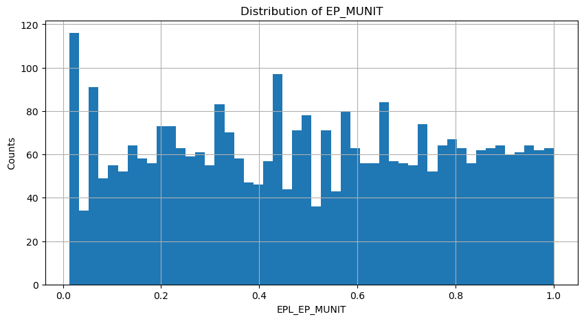
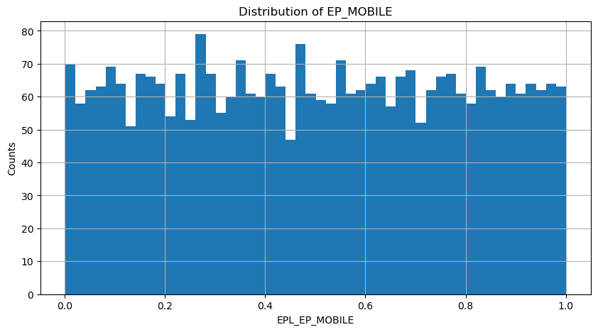
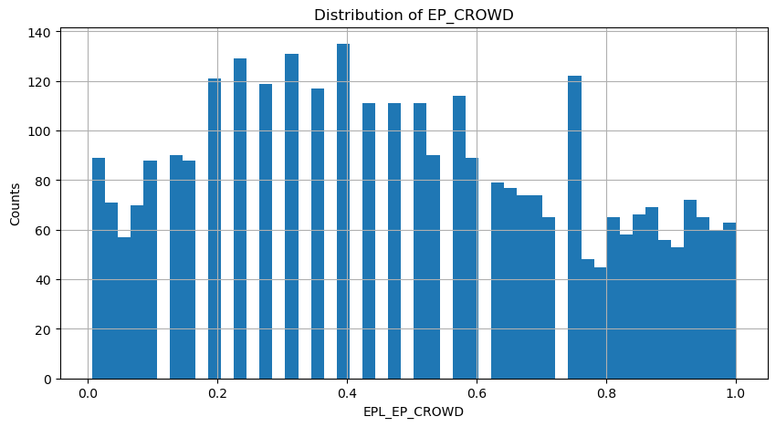
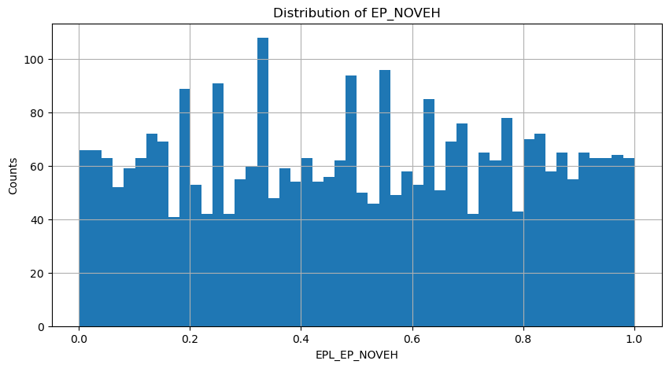
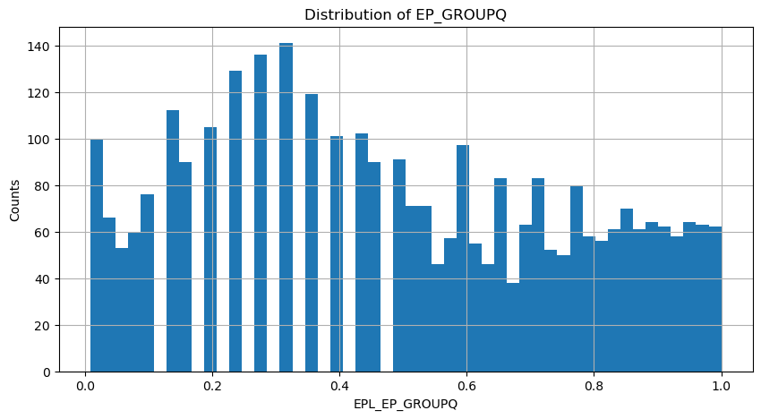
pygris is a Python package to help users access US Census Bureau TIGER/Line and cartographic boundary shapefiles and load them into Python as GeoDataFrames. The goal of the package is to make it simple to access US Census geographic data; data can be acquired with a single function for a given geography (e.g. tracts() for Census tracts) along with a few options.
from pygris import counties
# Get the default TIGER/Line file for counties
us_counties = counties( cache = True, year=2016)
# Get the cartographic boundary file with cb = True
us_cartographic = counties(cb = True, cache = True, year=2016)
# Plot the two side-by-side to compare them
fig, ax = plt.subplots(ncols = 2)
us_counties.plot(ax = ax[0])
us_cartographic.plot(ax = ax[1])
ax[0].set_title("TIGER/Line")
ax[1].set_title("Cartographic")Text(0.5, 1.0, 'Cartographic')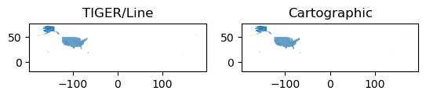
from pygris.utils import shift_geometry
us_rescaled = shift_geometry(us_counties)
us_rescaled.plot()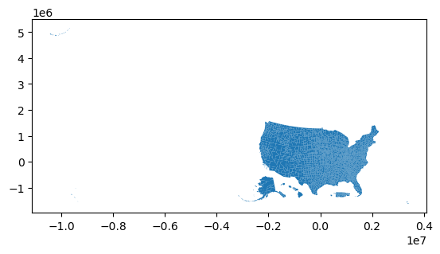
us_rescaled.head()| STATEFP | COUNTYFP | COUNTYNS | GEOID | NAME | NAMELSAD | LSAD | CLASSFP | MTFCC | CSAFP | CBSAFP | METDIVFP | FUNCSTAT | ALAND | AWATER | INTPTLAT | INTPTLON | geometry | |
|---|---|---|---|---|---|---|---|---|---|---|---|---|---|---|---|---|---|---|
| 0 | 31 | 039 | 00835841 | 31039 | Cuming | Cuming County | 06 | H1 | G4020 | None | None | None | A | 1477895811 | 10447360 | +41.9158651 | -096.7885168 | POLYGON ((-97.01952 42.00410, -97.01952 42.004... |
| 1 | 53 | 069 | 01513275 | 53069 | Wahkiakum | Wahkiakum County | 06 | H1 | G4020 | None | None | None | A | 680956787 | 61588406 | +46.2946377 | -123.4244583 | POLYGON ((-123.43639 46.23820, -123.44759 46.2... |
| 2 | 35 | 011 | 00933054 | 35011 | De Baca | De Baca County | 06 | H1 | G4020 | None | None | None | A | 6016761713 | 29147306 | +34.3592729 | -104.3686961 | POLYGON ((-104.56739 33.99757, -104.56772 33.9... |
| 3 | 31 | 109 | 00835876 | 31109 | Lancaster | Lancaster County | 06 | H1 | G4020 | 339 | 30700 | None | A | 2169240199 | 22877180 | +40.7835474 | -096.6886584 | POLYGON ((-96.91060 40.95841, -96.91060 40.958... |
| 4 | 31 | 129 | 00835886 | 31129 | Nuckolls | Nuckolls County | 06 | H1 | G4020 | None | None | None | A | 1489645187 | 1718484 | +40.1764918 | -098.0468422 | POLYGON ((-98.27367 40.08940, -98.27367 40.089... |
svi.head()| FID | ST | STATE | ST_ABBR | COUNTY | GEOID | LOCATION | AREA_SQMI | E_TOTPOP | M_TOTPOP | E_HU | M_HU | E_HH | M_HH | E_POV | M_POV | E_UNEMP | M_UNEMP | E_PCI | M_PCI | E_NOHSDP | M_NOHSDP | E_AGE65 | M_AGE65 | E_AGE17 | M_AGE17 | E_DISABL | M_DISABL | E_SNGPNT | M_SNGPNT | E_MINRTY | M_MINRTY | E_LIMENG | M_LIMENG | E_MUNIT | M_MUNIT | E_MOBILE | M_MOBILE | E_CROWD | M_CROWD | E_NOVEH | M_NOVEH | E_GROUPQ | M_GROUPQ | EP_POV | MP_POV | EP_UNEMP | MP_UNEMP | EP_PCI | MP_PCI | EP_NOHSDP | MP_NOHSDP | EP_AGE65 | MP_AGE65 | EP_AGE17 | MP_AGE17 | EP_DISABL | MP_DISABL | EP_SNGPNT | MP_SNGPNT | EP_MINRTY | MP_MINRTY | EP_LIMENG | MP_LIMENG | EP_MUNIT | MP_MUNIT | EP_MOBILE | MP_MOBILE | EP_CROWD | MP_CROWD | EP_NOVEH | MP_NOVEH | EP_GROUPQ | MP_GROUPQ | EPL_POV | EPL_UNEMP | EPL_PCI | EPL_NOHSDP | SPL_THEME1 | RPL_THEME1 | EPL_AGE65 | EPL_AGE17 | EPL_DISABL | EPL_SNGPNT | SPL_THEME2 | RPL_THEME2 | EPL_MINRTY | EPL_LIMENG | SPL_THEME3 | RPL_THEME3 | EPL_MUNIT | EPL_MOBILE | EPL_CROWD | EPL_NOVEH | EPL_GROUPQ | SPL_THEME4 | RPL_THEME4 | SPL_THEMES | RPL_THEMES | F_POV | F_UNEMP | F_PCI | F_NOHSDP | F_THEME1 | F_AGE65 | F_AGE17 | F_DISABL | F_SNGPNT | F_THEME2 | F_MINRTY | F_LIMENG | F_THEME3 | F_MUNIT | F_MOBILE | F_CROWD | F_NOVEH | F_GROUPQ | F_THEME4 | F_TOTAL | E_UNINSUR | M_UNINSUR | EP_UNINSUR | MP_UNINSUR | E_DAYPOP | Percentile_EP_MUNIT | Percentile_EP_MOBILE | Percentile_EP_CROWD | Percentile_EP_NOVEH | Percentile_EP_GROUPQ | EPL_EP_MUNIT | EPL_EP_MOBILE | EPL_EP_CROWD | EPL_EP_NOVEH | EPL_EP_GROUPQ | |
|---|---|---|---|---|---|---|---|---|---|---|---|---|---|---|---|---|---|---|---|---|---|---|---|---|---|---|---|---|---|---|---|---|---|---|---|---|---|---|---|---|---|---|---|---|---|---|---|---|---|---|---|---|---|---|---|---|---|---|---|---|---|---|---|---|---|---|---|---|---|---|---|---|---|---|---|---|---|---|---|---|---|---|---|---|---|---|---|---|---|---|---|---|---|---|---|---|---|---|---|---|---|---|---|---|---|---|---|---|---|---|---|---|---|---|---|---|---|---|---|---|---|---|---|---|---|---|---|---|---|---|---|---|---|---|
| 0 | 0 | 1 | ALABAMA | AL | Autauga | 1001 | Autauga County, Alabama | 594.446120 | 55049 | 0 | 22714 | 75 | 20800 | 391 | 6697 | 1037 | 1437 | 277 | 26168 | 1221 | 4528 | 445 | 7695 | 104 | 13853 | 34 | 10009 | 850 | 1516 | 267.0 | 13386 | 161.0 | 432 | 163.3 | 1034 | 329.9 | 4095 | 379 | 254 | 104.5 | 1024 | 242 | 490 | 163 | 12.3 | 1.9 | 5.6 | 1.1 | 26168 | 1221 | 12.4 | 1.2 | 14.0 | 0.2 | 25.2 | 0.1 | 18.4 | 1.6 | 7.3 | 1.3 | 24.3 | 0.3 | 0.8 | 0.3 | 4.6 | 1.5 | 18.0 | 1.7 | 1.2 | 0.5 | 4.9 | 1.1 | 0.9 | 0.3 | 0.2824 | 0.3298 | 0.3607 | 0.4744 | 1.4473 | NaN | 0.1964 | 0.8313 | 0.7380 | 0.3200 | 2.0856 | NaN | 0.6339 | 0.5355 | 1.1694 | NaN | NaN | NaN | NaN | NaN | NaN | NaN | NaN | NaN | NaN | 0 | 0 | 0 | 0 | 0 | 0 | 0 | 0 | 0 | 0 | 0 | 0 | 0 | 0 | 0 | 0 | 0 | 0 | 0 | 0 | 4852 | 649 | 8.9 | 1.2 | 40854 | 0.682527 | 0.728358 | 0.235201 | 0.338638 | 0.130968 | 0.682527 | 0.728358 | 0.235201 | 0.338638 | 0.130968 |
| 1 | 1341 | 1 | ALABAMA | AL | Baldwin | 1003 | Baldwin County, Alabama | 1589.807425 | 199510 | 0 | 107579 | 202 | 75149 | 1285 | 25551 | 1920 | 5887 | 674 | 28069 | 733 | 13956 | 974 | 37338 | 79 | 44270 | 0 | 27390 | 1430 | 4494 | 589.8 | 33560 | 245.0 | 1540 | 489.6 | 19711 | 936.9 | 12829 | 935 | 958 | 219.1 | 2303 | 342 | 2911 | 443 | 13.0 | 1.0 | 6.3 | 0.7 | 28069 | 733 | 10.0 | 0.7 | 18.7 | 0.1 | 22.2 | 0.0 | 13.9 | 0.7 | 6.0 | 0.8 | 16.8 | 0.1 | 0.8 | 0.3 | 18.3 | 0.9 | 11.9 | 0.9 | 1.3 | 0.3 | 3.1 | 0.5 | 1.5 | 0.2 | 0.3317 | 0.4241 | 0.2448 | 0.2999 | 1.3005 | NaN | 0.6437 | 0.4476 | 0.3521 | 0.1493 | 1.5928 | NaN | 0.5253 | 0.5282 | 1.0535 | NaN | NaN | NaN | NaN | NaN | NaN | NaN | NaN | NaN | NaN | 0 | 0 | 0 | 0 | 0 | 0 | 0 | 0 | 0 | 0 | 0 | 0 | 0 | 1 | 0 | 0 | 0 | 0 | 1 | 1 | 23255 | 1817 | 11.8 | 0.9 | 197683 | 0.973106 | 0.541057 | 0.274666 | 0.092457 | 0.359007 | 0.973106 | 0.541057 | 0.274666 | 0.092457 | 0.359007 |
| 2 | 3074 | 1 | ALABAMA | AL | Barbour | 1005 | Barbour County, Alabama | 884.875776 | 26614 | 0 | 11802 | 101 | 9122 | 286 | 6235 | 636 | 1323 | 267 | 17249 | 822 | 4824 | 362 | 4399 | 29 | 5735 | 19 | 5086 | 397 | 1132 | 160.1 | 14402 | 154.0 | 382 | 153.7 | 179 | 90.4 | 3534 | 215 | 158 | 62.2 | 889 | 145 | 2932 | 244 | 26.4 | 2.7 | 12.8 | 2.6 | 17249 | 822 | 26.2 | 1.9 | 16.5 | 0.1 | 21.5 | 0.1 | 21.5 | 1.7 | 12.4 | 1.7 | 54.1 | 0.6 | 1.5 | 0.6 | 1.5 | 0.8 | 29.9 | 1.8 | 1.7 | 0.7 | 9.7 | 1.5 | 11.0 | 0.9 | 0.9261 | 0.9526 | 0.9491 | 0.9551 | 3.7829 | NaN | 0.4174 | 0.3617 | 0.8937 | 0.9296 | 2.6024 | NaN | 0.9042 | 0.6979 | 1.6020 | NaN | NaN | NaN | NaN | NaN | NaN | NaN | NaN | NaN | NaN | 1 | 1 | 1 | 1 | 4 | 0 | 0 | 0 | 1 | 1 | 1 | 0 | 1 | 0 | 1 | 0 | 0 | 1 | 2 | 8 | 3079 | 385 | 13.0 | 1.6 | 27321 | 0.278167 | 0.937619 | 0.433164 | 0.883036 | 0.942553 | 0.278167 | 0.937619 | 0.433164 | 0.883036 | 0.942553 |
| 3 | 2113 | 1 | ALABAMA | AL | Bibb | 1007 | Bibb County, Alabama | 622.582355 | 22572 | 0 | 8972 | 76 | 7048 | 352 | 3390 | 818 | 643 | 207 | 18988 | 1773 | 3040 | 374 | 3360 | 111 | 4756 | 44 | 3039 | 367 | 516 | 202.8 | 5696 | 21.0 | 96 | 106.7 | 195 | 86.6 | 2549 | 261 | 22 | 22.8 | 443 | 136 | 2001 | 190 | 16.5 | 4.0 | 7.1 | 2.3 | 18988 | 1773 | 19.3 | 2.3 | 14.9 | 0.5 | 21.1 | 0.2 | 14.8 | 1.8 | 7.3 | 2.9 | 25.2 | 0.1 | 0.4 | 0.5 | 2.2 | 1.0 | 28.4 | 3.0 | 0.3 | 0.3 | 6.3 | 1.9 | 8.9 | 0.8 | 0.5536 | 0.5425 | 0.8819 | 0.7781 | 2.7561 | NaN | 0.2585 | 0.3088 | 0.4419 | 0.3266 | 1.3359 | NaN | 0.6450 | 0.3553 | 1.0003 | NaN | NaN | NaN | NaN | NaN | NaN | NaN | NaN | NaN | NaN | 0 | 0 | 0 | 0 | 0 | 0 | 0 | 0 | 0 | 0 | 0 | 0 | 0 | 0 | 1 | 0 | 0 | 1 | 2 | 2 | 1859 | 400 | 9.0 | 1.9 | 18756 | 0.411203 | 0.925366 | 0.025143 | 0.572247 | 0.916454 | 0.411203 | 0.925366 | 0.025143 | 0.572247 | 0.916454 |
| 4 | 1 | 1 | ALABAMA | AL | Blount | 1009 | Blount County, Alabama | 644.806508 | 57704 | 0 | 23850 | 59 | 20619 | 403 | 9441 | 963 | 1367 | 284 | 21033 | 689 | 7882 | 645 | 9921 | 123 | 13601 | 29 | 8538 | 663 | 1614 | 301.0 | 7122 | 147.0 | 1018 | 248.1 | 190 | 85.8 | 5467 | 429 | 391 | 130.6 | 816 | 198 | 552 | 131 | 16.5 | 1.7 | 6.0 | 1.2 | 21033 | 689 | 20.0 | 1.6 | 17.2 | 0.2 | 23.6 | 0.1 | 14.9 | 1.2 | 7.8 | 1.5 | 12.3 | 0.3 | 1.9 | 0.5 | 0.8 | 0.4 | 22.9 | 1.8 | 1.9 | 0.6 | 4.0 | 1.0 | 1.0 | 0.2 | 0.5536 | 0.3792 | 0.7504 | 0.8058 | 2.4890 | NaN | 0.4909 | 0.6466 | 0.4527 | 0.4018 | 1.9920 | NaN | 0.4238 | 0.7482 | 1.1719 | NaN | NaN | NaN | NaN | NaN | NaN | NaN | NaN | NaN | NaN | 0 | 0 | 0 | 0 | 0 | 0 | 0 | 0 | 0 | 0 | 0 | 0 | 0 | 0 | 0 | 0 | 0 | 0 | 0 | 0 | 6388 | 740 | 11.2 | 1.3 | 42597 | 0.136696 | 0.847231 | 0.503819 | 0.197327 | 0.163113 | 0.136696 | 0.847231 | 0.503819 | 0.197327 | 0.163113 |
svi['GEOID'] = svi['GEOID'].astype(str).str.zfill(5)
us_rescaled['GEOID'] = us_rescaled['GEOID'].astype(str).str.zfill(5)svi_geo= svi.merge(us_rescaled[['GEOID', 'NAMELSAD', 'geometry']], left_on='GEOID', right_on='GEOID')
svi_geo= gpd.GeoDataFrame(svi_geo, crs=us_rescaled.crs)
svi_geo.plot(figsize=(10,10))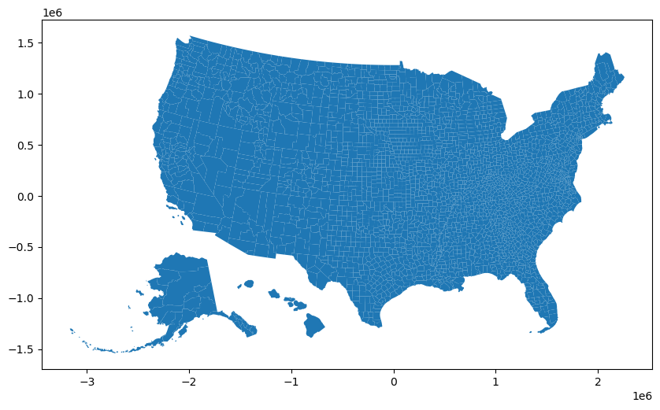
percentile_columns=['EPL_EP_MUNIT', 'EPL_EP_MOBILE', 'EPL_EP_CROWD', 'EPL_EP_NOVEH', 'EPL_EP_GROUPQ']
for var in percentile_columns:
fig, ax = plt.subplots(1, 1, figsize=(10, 10))
svi_geo.plot(column=var, ax=ax, legend=True, cmap='viridis')
ax.set_title("Spatial Distribution of " + var)
plt.show()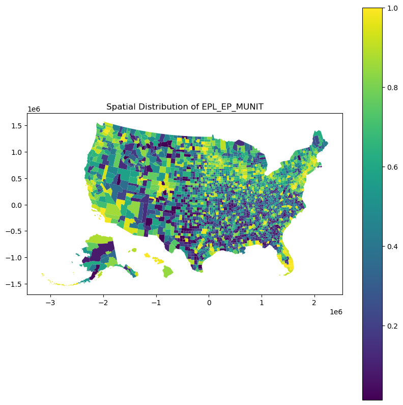
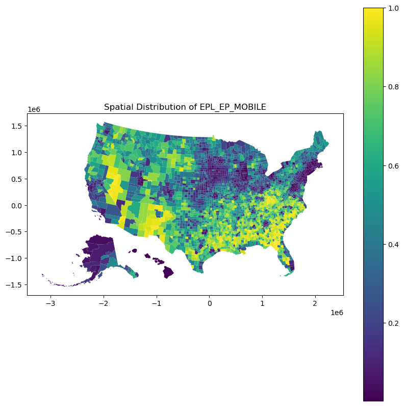
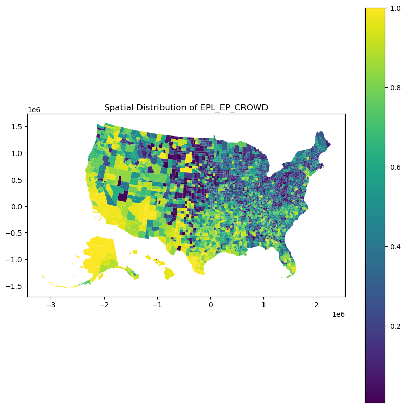
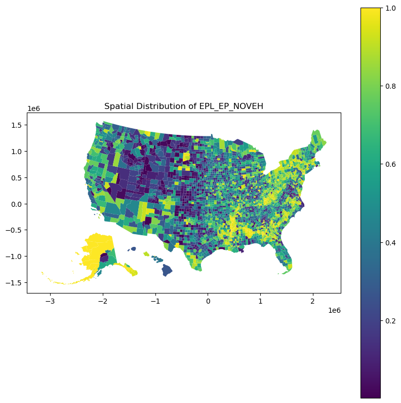
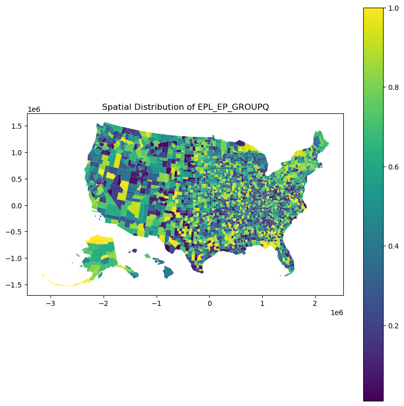
Question 2: The Housing and Transportation (HT) Index
# Sum the calculated percentile ranks to get the Housing & Transportation index
svi_geo['SPL_THEME4'] = svi_geo[['EPL_EP_MUNIT', 'EPL_EP_MOBILE', 'EPL_EP_CROWD', 'EPL_EP_NOVEH', 'EPL_EP_GROUPQ']].sum(axis=1)
# Calculate percentile rank for SPL_THEME4
svi_geo['RPL_THEME4'] = svi_geo['SPL_THEME4'].rank(pct=True)
# Check the updated dataframe
svi_geo.plot(column='RPL_THEME4', legend=True, figsize=(10, 10))
plt.title('Spatial Distribution of Housing & Transportation Index')
plt.show()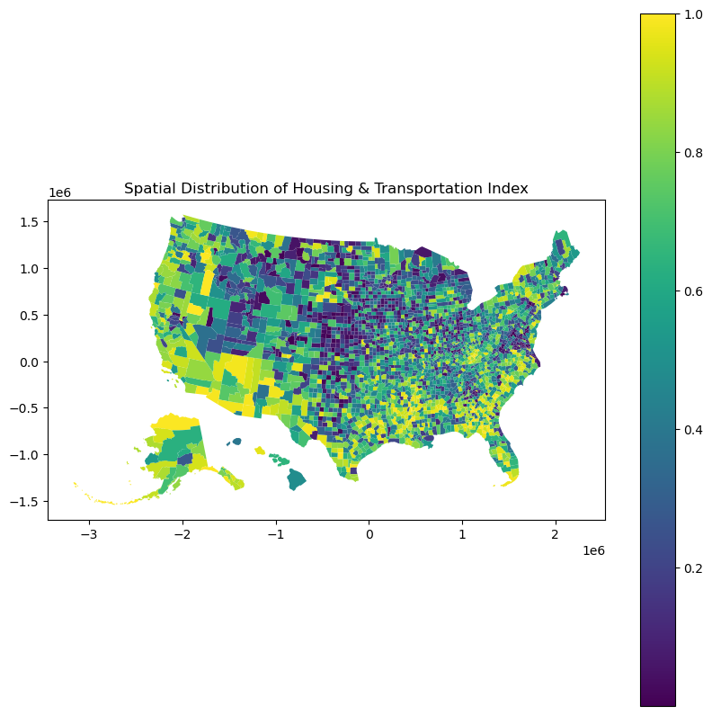
Total Combined SVI Values
svi_geo.columns[svi_geo.columns.str.contains('THEME')]Index(['SPL_THEME1', 'RPL_THEME1', 'SPL_THEME2', 'RPL_THEME2', 'SPL_THEME3',
'RPL_THEME3', 'SPL_THEME4', 'RPL_THEME4', 'SPL_THEMES', 'RPL_THEMES',
'F_THEME1', 'F_THEME2', 'F_THEME3', 'F_THEME4'],
dtype='object')svi_geo['SPL_THEME1']0 1.4473
1 1.3005
2 3.7829
3 2.7561
4 2.4890
...
3137 0.8373
3138 0.1070
3139 1.7383
3140 1.8539
3141 0.9255
Name: SPL_THEME1, Length: 3142, dtype: float64svi_geo['Composite_Index'] = svi_geo[['SPL_THEME1', 'SPL_THEME2', 'SPL_THEME3', 'SPL_THEME4']].sum(axis=1)
svi_geo['RPL_THEMES'] = svi_geo['Composite_Index'].rank(pct=True)
svi_geo.plot(column='RPL_THEMES', legend=True, figsize=(10, 10))
plt.title('Spatial Distribution of Composite SVI Index')
plt.show()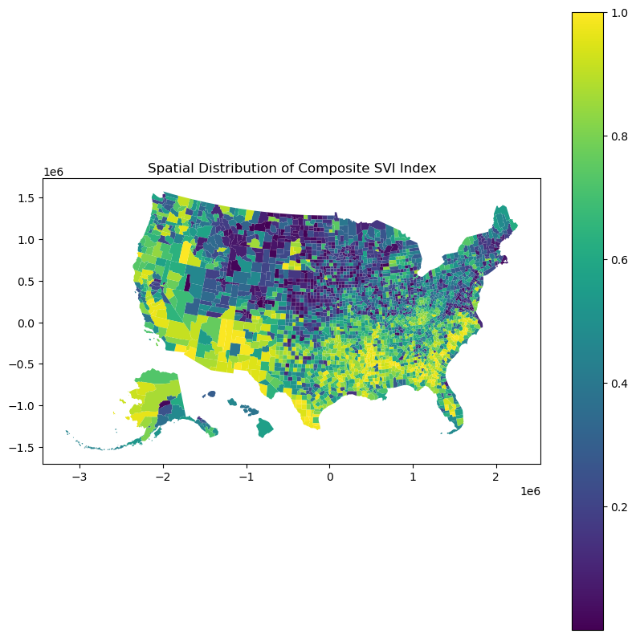
SOVI by HVRI
I am using SoVI 2019 US County Data to compare with CDC’s SVI.
sovi= pd.read_excel('sovi2019_countyus.xlsx')
sovi.head()| No | GeoID | GeoID_A | Name | State | SoVI2019US | |
|---|---|---|---|---|---|---|
| 0 | 1 | 0500000US01001 | 0500000US01001 | Autauga County, Alabama | Alabama | -3.163005 |
| 1 | 2 | 0500000US01003 | 0500000US01003 | Baldwin County, Alabama | Alabama | -1.704175 |
| 2 | 3 | 0500000US01005 | 0500000US01005 | Barbour County, Alabama | Alabama | 2.310552 |
| 3 | 4 | 0500000US01007 | 0500000US01007 | Bibb County, Alabama | Alabama | -0.540243 |
| 4 | 5 | 0500000US01009 | 0500000US01009 | Blount County, Alabama | Alabama | -2.473869 |
sovi['GOEID'] = sovi['GeoID'].str[-5:].astype(str)
sovi['GOEID']0 01001
1 01003
2 01005
3 01007
4 01009
...
3137 56037
3138 56039
3139 56041
3140 56043
3141 56045
Name: GOEID, Length: 3142, dtype: objectsovi_geo= sovi.merge(us_rescaled[['GEOID', 'NAMELSAD', 'geometry']], left_on='GOEID', right_on='GEOID')
sovi_geo= gpd.GeoDataFrame(sovi_geo, crs=us_rescaled.crs)Text(0.5, 1.0, 'Spatial Distribution of SOVI Index')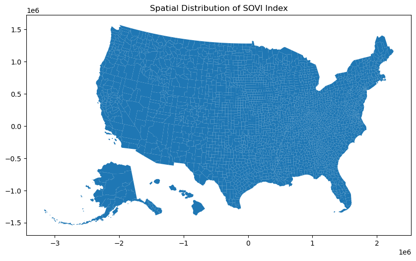
sovi_geo.plot(column='SoVI2019US',figsize=(10,10))
plt.title('Spatial Distribution of SOVI Index')Text(0.5, 1.0, 'Spatial Distribution of SOVI Index')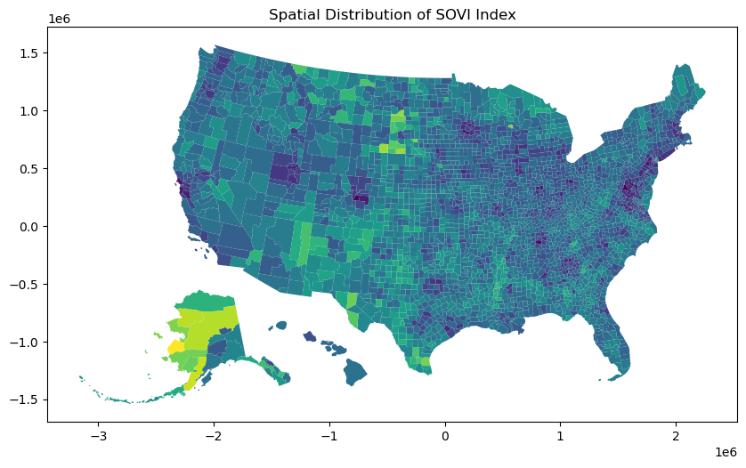
Question 3
plt.figure(figsize=(8, 6))
plt.scatter(svi_geo['Composite_Index'], sovi_geo['SoVI2019US'])
plt.title('Relationship between CDC SVI and HVRI SOVI')
plt.xlabel('CDC SVI 2016')
plt.ylabel('HVRI SOVI 2019')
plt.grid(True)
plt.show()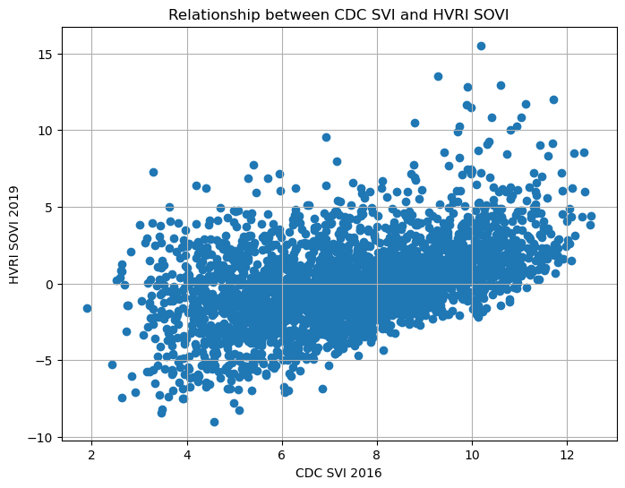
import scipy.stats
pearson_coef, p_value = scipy.stats.pearsonr(svi_geo['Composite_Index'], sovi_geo['SoVI2019US'])
print(f"Pearson Correlation Coefficient: {pearson_coef}")
print(f"P-value: {p_value}")Pearson Correlation Coefficient: 0.46714364857700585
P-value: 4.202118302438132e-170Here we have a coeeficient of correlation of 0.467, indicating a positive correlation between the two indices. The number is statistically significant given that p-value is far less than 0.05.
Therefore we can safely say that the two indices are positively correlated. But one disclaimer is that the two indices are from two different years, 2016 and 2019. So, the correlation might be different if we use the same year data.
Question 4: CDC SVI and HVRI SOVI
sovi_geo['SOVI_PctRank']= sovi_geo['SoVI2019US'].rank(pct=True)
sovi_geo.plot(column='SOVI_PctRank', figsize=(10,10))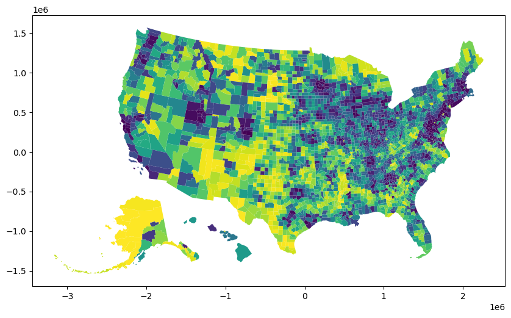
svi_geo['difference'] = svi_geo['RPL_THEMES'] - sovi_geo['SOVI_PctRank']
svi_geo.plot(column='difference', figsize=(10,10), legend=True, cmap='viridis')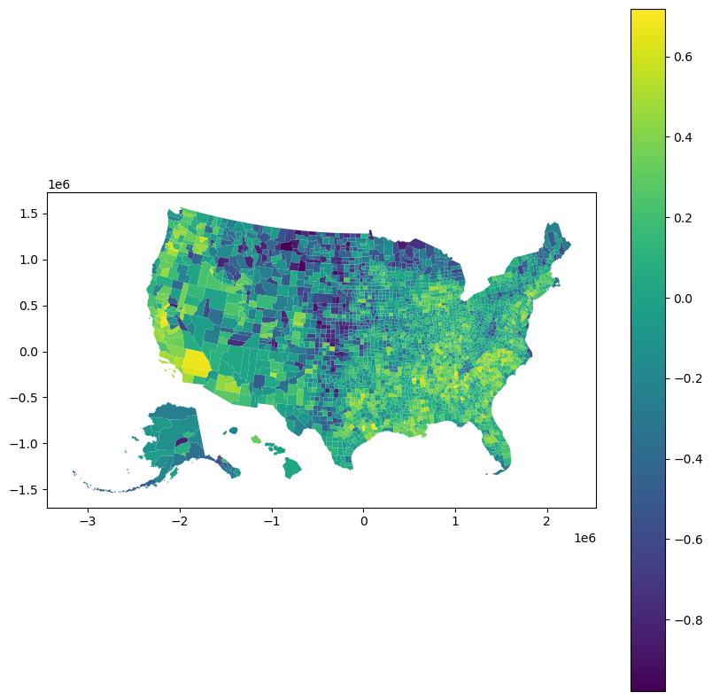
# svi_geo.explore(column='difference', cmap='viridis', legend=True, figsize=(10,10))The counties colored in yellow represent areas where the SVI is significantly higher than the SOVI. This suggests that according to the CDC’s SVI, these counties are more vulnerable compared to their ranking in the HVRI’s SOVI. Whereas the counties that appear in purple show where the SOVI is higher than the SVI. In these areas, the HVRI’s assessment of vulnerability is higher than the CDC’s.
If certain regions of the country are predominantly one color, it suggests regional trends in how the two indices diverge. For example, the West Coast is mostly yellow, it would mean that the CDC’s index rates the West Coast as more vulnerable than the HVRI’s index does.